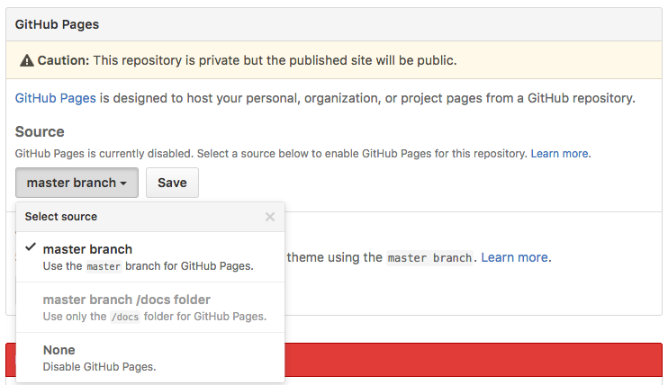

Keeping a master copy of your repo on GitHub is a great way to keep everything backed up, as well as enable team development. But GitHub can also help you publish the contents of that repo to the web so that everyone can see it in their web browser. This feature is known as GitHub Pages.
Enabling GitHub Pages
By default, GitHub Pages is not enabled for new repos. To turn it on, follow these simple steps:
- Go to your repo's page on the GitHub web site
- Choose the
Settingstab - On the right side, near the bottom is a setting section entitled
GitHub Pages: snder theSourcesection, click on the first button labeledNoneand chooseMaster Branchfrom the drop down. Then click theSavebutton to save this selection.

After you save this change, the files in your repository become web addressable, meaning you can load them into a web browser using a URL that begins with the URL shown in the GitHub Pages settings box. This URL has the following pattern, where account-name is replaced with the name of the account in which the repo lives, and repo-name is replaced with the name of the repo.
https://account-name.github.io/repo-name/If you have a file named index.html in the root of the repo, then this URL will return that file. If your index.html is in a sub-folder, just add the subfolder's name on the end of the URL. For example, to load an index.html from a subfolder named myfolder, the URL would be:
https://account-name.github.io/repo-name/myfolderOptions
Enabling GitHub Pages on the master branch is the easiest way to get your site published to the web, but there are a few other options in that drop-down.
Master Branch /docs Folder
This enables GitHub pages only for files in a folder named docs within your repo. All other files outside of that folder are not web addressable. This is for code libraries that want to host their documentation on a GitHub Pages site, but keep the code itself just in the repo.
This approach can also be used for sites where the published content is actually built from templates and document fragments that live in a separate folder. This tutorials site is an example. Each tutorial is just a document fragment that is merged with a template to create the final published tutorial. My tutorial fragments and meta-data live in a src folder, and my scripts build the published site into the docs folder.
The gh-pages branch
If you read the section on branching and merging in the Managing Your Files tutorial, and feel comfortable working with branches, there is another option available to you.
Publishing directly from the master branch is something new that was added to GitHub Pages in the summer of 2016. Prior to that, one had to create a new branch in the repo named exactly gh-pages and merge commits onto that branch in order to publish your site. Although it's not displayed in the options drop-down, this approach is still supported, and will probably be so for quite some time.
This approach is more complex, as it requires working with branches, but it's also more powerful, because it enables you to work on your site and back it up to GitHub without automatically publishing those changes to the web. Because commits made to one branch are isolated from other branches until you merge them, you can make all the commits you want to the master branch, but they won't appear in the gh-pages branch until you merge them into it. When you are ready to publish your site, you simply switch to the gh-pages branch, merge all the commits from master, and synchronize with GitHub to make them available on the web.
Default Account Repo
GitHub pages also allows each account to have one repo that becomes the account's default web site. If you name your repo account-name.github.io, replacing account-name with your GitHub user name, then you can access it using the shorter URL https://account-name.github.io. Since repo names must be unique within an account, and since the repo must be named exactly as shown, you can have only one of these repos per-account.